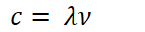

Photoelectric-Effect
Photoelectric Effect
Spectroscopy - the measurement of spectra produced when matter emits or is hit with electromagnetic radiation
Study of how magnetic radiation interacts with matter
 {width="7.645833333333333in" height="3.2604166666666665in"}
{width="7.645833333333333in" height="3.2604166666666665in"}
-
Absorption - ground state => excited state
- Electrons are excited, energy level increases
-
Emission - excited state => ground state
- Electrons end excitement, energy level decreases
 {width="7.125in" height="3.2708333333333335in"}
{width="7.125in" height="3.2708333333333335in"}
-
Wavelength of photon emitted - inversely proportional to frequency
-
{width="1.5104166666666667in" height="0.3333333333333333in"}
-
Where c = speed of light
-
 {width="3.3333333333333335in" height="0.3541666666666667in"}
{width="3.3333333333333335in" height="0.3541666666666667in"} -
{width="5.520833333333333in" height="0.3541666666666667in"}
-
-
Photon is absorbed - energy is increased/decreased by the energy of the photon
-
{width="6.229166666666667in" height="0.6875in"}
-
{width="1.5104166666666667in" height="0.3333333333333333in"}
- {width="4.947916666666667in" height="0.3541666666666667in"}
 {width="5.333333333333333in" height="0.3541666666666667in"}
{width="5.333333333333333in" height="0.3541666666666667in"}
{width="3.4791666666666665in" height="0.3541666666666667in"}